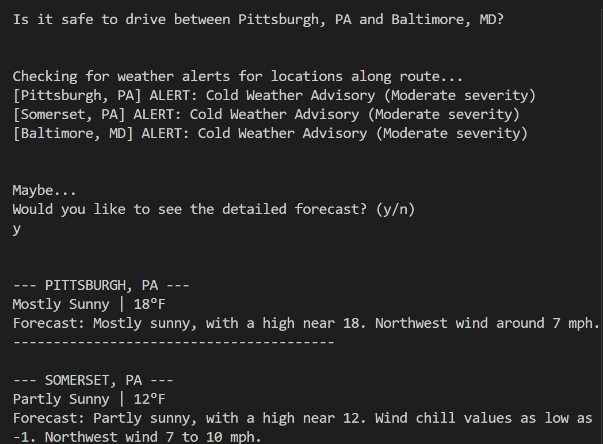

This page is a clone of my resume
The site may not be very professional, yet,
but I understand everything here
Contact
vanorton@andrew.cmu.edu
Academics
Carnegie Mellon University, Pittsburgh PA
B.S. in Mathematics, minor in Physics
Expected Graduation May 2026
GPA: 3.8
Research
Discrete and Continuous Analysis in Appalachia REU | June 2024-July 2024
Fairmont State University, Fairmont WV |
Advisor: Dr. Robert Niichel
Lewis Carroll’s Triangle Problem, Hemispheric Synchronicity Analysis of EEG Data from Nature Sounds Study
Research Topics in Mathematical Sciences - Interacting particles in biology, physics, and machine learning
Clubs
Carnegie Mellon University Mathematics Club
CMU Independent Musicians Organization
Society of Physics Students
Skills
Rigorous Constructions and Statements of Mathematical Proofs
Requisite skill for high-level mathematics courses, used frequently
Program Design and Data Analysis using Python
Examples include creating a physics-based algorithm to generate realistic
lightning bolt paths for use in a video game project.
Programming in C language
Examples include writing a program in C that performs lossless compression
on selected files using Huffman Compression.
Music Composition and Production
Writing and playing original compositions using piano,
guitar, and synthesizers and using
Digital Audio Workstations (DAWs) to record and edit music.
Familiar with LMMS, FL Studio, Logic Pro X, and Pro Tools.
Awards
- Mellon College of Science Dean’s List, with High Honors (Fall 21, Spring 22, Fall 23, Spring 24)
- Mellon College of Science Dean’s List (Fall 22, Spring 23, Fall 25)
- Rank #547 in Willliam Lowell Putnam Mathematical Competition (Fall 22)
- Runner-up Presentation in Physical Sciences, Engineering, and Technology, WVU Summer Undergraduate Research Symposium (Summer 2024)
PROJECTS
Crossy Road
Homework assignment for 15-113,the task was to vibe code crossy road
in one hour. The results can be seen
here:

NWS API PGH-BALT Forecast
Homework assignment for 15-113, the task was to use AI to assist in
making a program that uses an API to do something interesting. The repository can be found
here:
